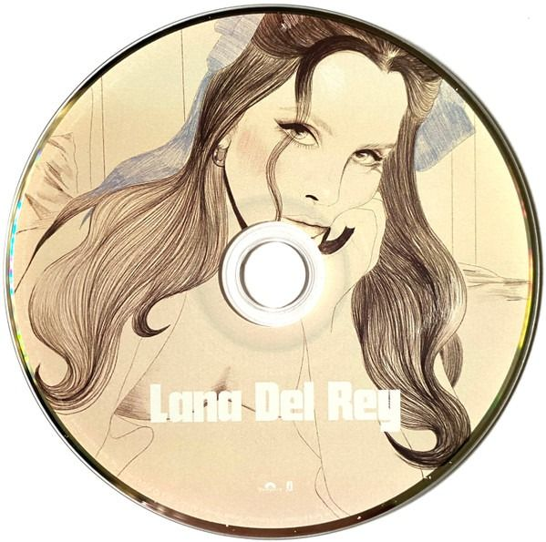

Did you know that there's a
tunnel under Ocean Blvd
- The Grants
- Did you know that there's a tunnel under Ocean Blvd
- Sweet
- A&W
- Judah Smith Interlude
- Candy Necklace (feat. Jon Batiste)
- Jon Batiste Interlude
- Kintsugi
- Fingertips
- Paris, Texas (feat. SYML)
- Grandfather please stand on the shoulders of my
father while he's deep-sea fishing (feat. RIOPY)
- Let the Light In (feat. Father John Misty)
- Margaret (feat. Bleachers)
- Fishtail
- Peppers (feat. Tommy Genesis)
- Taco Truck x VB
